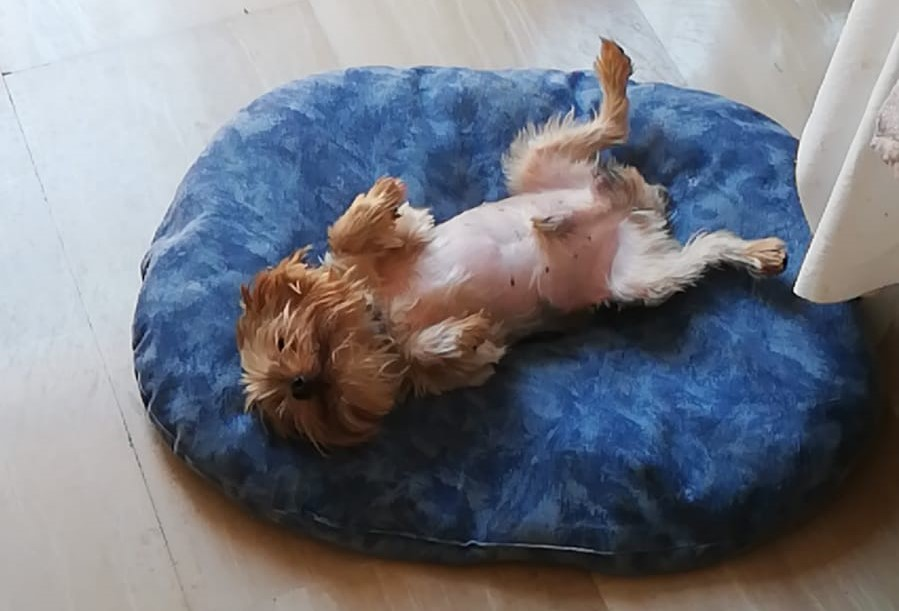
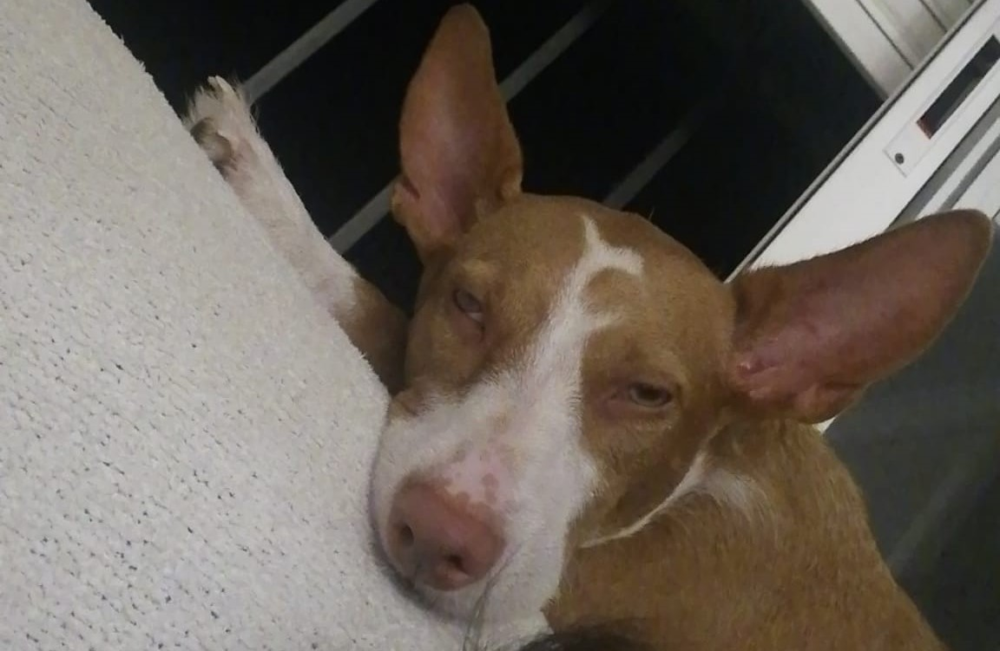

Nombre Fotón😎 info Coco 
Este es mi perro Coco, no tiene mucho más, es un yorkshire pequeño que se queja de todo y quiere dormir, pero bueno es muy cariñoso. tiene 7 añitos pero sigue igual que el primer día.Leia 
Esta perra es lo contrario a Coco, la adopamos hace 1 año con 2 meses, y desde que llegó a casa la revolucionó. Es muy nerviosa y llevará cientos de euros en objetos rotos por ella pero bueno se le quiere mucho. Está todo el rato buscando cariño y uno de misplanes favoritos con ella es ir al monte a pasear los 2 o correr por el pueblo.